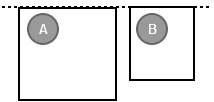

<!DOCTYPE HTML PUBLIC "-//W3C//DTD HTML 4.01 Transitional//EN">
<html>
  <head>
    <meta content="text/html; charset=ISO-8859-1"
      http-equiv="Content-Type">
    <title>Object Snapping</title>
    <meta name="order" content="10" />
  </head>
  <body>
    <h2>Object Snapping</h2>
    <p>Pencil users know that Pencil have already provided the default
      snapping between objects. Object snapping is very useful for aligning objects so that drawing operations can be done quickly. There
      are 6 default snappings in Pencil:</p>
    <ul>
      <li>
        Top-to-Top<br />
        <br /><br />
      </li>
      <li>Bottom-to-Bottom<br /><br /><br /></li>
      <li>Center-to-Center (horizontal)<br /><br /><br /></li>
      <li>Left-to-Left<br /><br /><br /></li>
      <li>Right-to-Right<br /><br /><br /></li>
      <li>Midle-to-Midle (vertical)<br /><br /><br /></li>
    </ul>
    <p><span>Sometimes the snapping needs to be customized for
        specific purpose. This tutorial will show how to create new custom
        snappings. These definitions are also put into an
        <code>&lt;Action&gt;&lt;/Action&gt;</code> and must have the exact id of
        <code><strong>getSnappingGuide</strong></code>.</span></p>
        
<pre name="code" class="xml"><![CDATA[
<Shape id="RoundedRect" displayName="Rectangle" icon="Icons/rectangle.png">
  <Properties>
    ...
  </Properties>
  <Behaviors>
    ...
  </Behaviors>
  <Actions>
    <Action id="getSnappingGuide">
      <Impl>
        var b = this.getBounding();
        return [
          new SnappingData("FrameTop", b.y + b.height/2, "TabBottom", false, this.id),
          new SnappingData("Top", b.y + b.height, "Top", false, this.id),
          new SnappingData("Bottom", b.y, "Bottom", false, this.id),
          new SnappingData("Left", b.x + b.width, "Left", true, this.id),
          new SnappingData("Right", b.x, "Right", true, this.id)
        ];
      </Impl>
    </Action>
  </Actions>
  <p:Content xmlns:p="http://www.evolus.vn/Namespace/Pencil"
             xmlns="http://www.w3.org/2000/svg">
    <rect id="rrRect" x="0" y="0" />
  </p:Content>
</Shape>
]]></pre>
    <p>The <code><strong>getSnappingGuide</strong></code> action is expected to return an array of snapping hints. Each snapping hint is
    composed in an object of type SnappingData:</p>
<pre name="code" class="js:nocontrols">
new SnappingData(SnappingName, position,
          ToSnappingName, isHorizontalSnapping, this.id)
</pre>
    <p>
      Where:
    </p>
    <ul>
      <li>
        <em>isHorizontalSnapping</em>
        : if true, the snapping will be
        through Horizontal direction.
      </li>
      <li>
        <em>SnappingName</em>
        : is the Snapping name of this object
        contains this snapping definition.
      </li>
      <li>
        <em>ToSnappingName</em>
        : is the Snapping name of other object that
        can be snapped to this object.
      </li>
      <li>
        <em>Position</em>
        : is the position in this shape when the snapping is defined (vertical or
        horizontal).
      </li>
    </ul>
    <p><strong>Built-in snapping data:</strong> by default, even if you don't provide snapping definitions, Pencil has the following snapping data defined for all objects:</p>
<pre name="code" class="js">
  new SnappingData("Top", b.y, "Top", false, this.id),
  new SnappingData("Bottom", b.y + b.height, "Bottom", false, this.id),
  new SnappingData("HCenter", b.y + b.height / 2, "HCenter", false, this.id),
  new SnappingData("Left", b.x, "Left", true, this.id),
  new SnappingData("Right", b.x + b.width, "Right", true, this.id),
  new SnappingData("VCenter", b.x + b.width / 2, "VCenter", true, this.id),
</pre>
    <p><span>where b is the object bounding, b.y is the object's top
        position, b.x is the object's left position, b.height is the
        object bound height, b.width is the object bound with.</span> </p>
    <p><span>In the above example of Rectangle, 4 default snappings are modified and a new
        snapping is created.</span> </p>
    <p><br
        clear="left">
      <span>In the above example, A's Top snapping was modified by <code>new SnappingData("Top", b.y + b.height, "Top",
          false, this.id),</code>. So
        other object have Top snapping will be possible to snap to A's new Top. The logic for Bottom, Left, Right snappings
        are the same.</span></p>
    <p><br
        clear="left">
      <br>
    </p>
    <p>Also in this example, a custom, new snapping data is introduced to defined a new snapping that are not standard
    to the general logic. This is good for special stencils that we would like to have very specific snappings defined.
    </p>
<pre name="code" class="js:nocontrols">
new SnappingData("FrameTop", b.y + b.height/2, "TabBottom", false, this.id)
</pre>
    <p>Suppose that we have another stencil named B with the following custom snapping defined:</p>
<pre name="code" class="js:nocontrols">
new SnappingData("TabBottom", b.y, "FrameTop", false, this.id)
</pre>
    <p><span>So, A have a new snapping <code>FrameTop</code> which allows other snapping of type <code>TabBottom</code> to be snapped to. Since 
    B has that specific <code>TabBottom</code> snapping defined, it will be possible for B to snap to A at the expected position.</span> </p>
    <p>If other objects want to snap to A at <code>FrameTop</code>, it just needs to define
        a snapping with the name of <code>TabBottom</code> name like B.</span>
    </p>
    <p>
        As noted above, all objects in Pencil has a <code>Top</code> snapping data defined by default to its top position, so to have all objects to be 
        able to snap to our A's special <code>FrameTop</code> snapping point, just modify the SnappingData definition to the following:
    </p>
<pre name="code" class="js:nocontrols">
new SnappingData("FrameTop", b.y + b.height/2, "Top", false, this.id)
</pre>
  </body>
</html>
